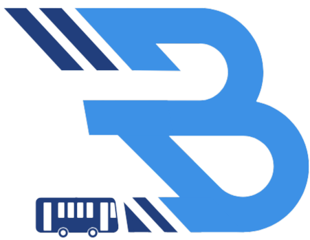

Disclaimer
Passenger count may be
unstable
due to standing passengers or rush hour conditions when the bus is near full capacity.

Hello, BusMate!
CURRENT LOCATION
Fetching address...
Hide Route
üöå Find Your Ride in Real-Time!
Estimated Time of Arrival